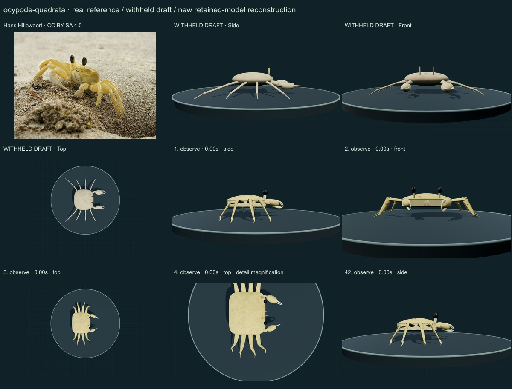
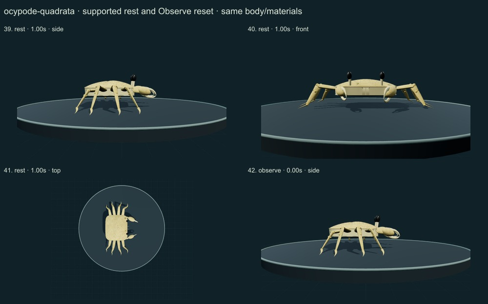
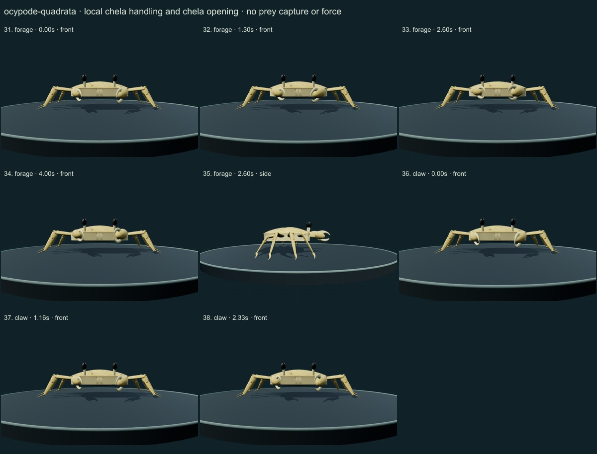
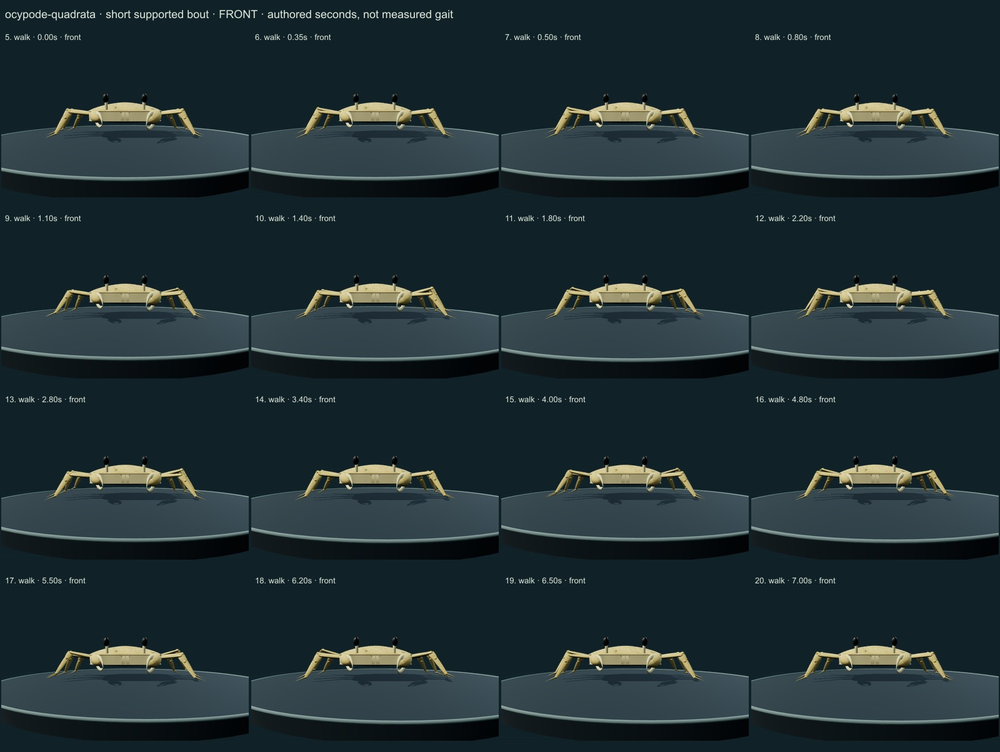
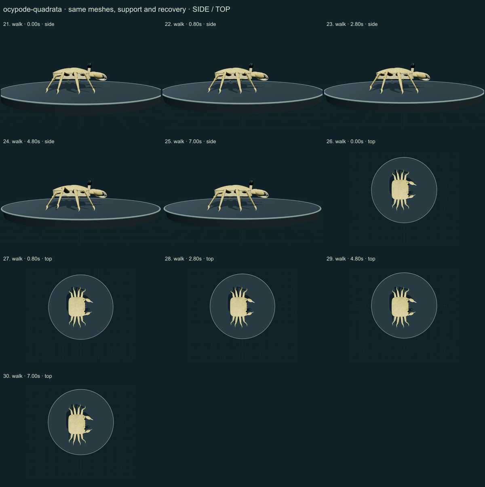

PhenoVoxel Archive · v0.6.19 · October 24, 2026
Atlantic ghost crab · individual initial correction
This five-species release reaches 262 after verified publication. 38 saved drafts remain withheld; 288 species remain to 550, including 250 without saved drafts. Release register. Fine anatomy and biological dynamics remain partial, unmeasured and independently unvalidated.
Selected Blickhan,Full&Ting1993 introduction/methods and actual printed303 figure were read/viewed for O.quadrata gait context. Only a slow eight-legged authored study is implemented, without transferring sister-species sprint physiology. Hans Hillewaert's living Costa Rica photo was viewed. Smithsonian juvenile preserved-specimen metadata is contextual; direct page404 and image reuse restrictions remain disclosed.
Hans Hillewaert · CC BY-SA 4.0. Hans Hillewaert caption identifies an Atlantic ghost crab at Cahuita, Costa Rica. A living sandy yellow phenotype guides the visible surface. Sex, dimensions, cuticle optics and eye visual physiology are not independently determined. Resized inside 1000 px, flattened and JPEG encoded; no generative alteration.
Exact source/license/download/local checksums remain in the data. Photograph identity and capture conditions are not independently re-established. Generated photographs are not used.
A high quadrangular shell and continuous lateral wall, large dark elongated eye ends on thicker unhorned stalks, asymmetric cream chelae, eight flattened articulated limbs and curved terminal points replace the generic oval and needle appendages.
Sandy yellow cuticle, restrained pale variation, fine granules and leg-edge setae are original numerical surfaces retained through movement.
Remaining: The frontal/orbital region, stridulating ridges, gill chambers, buccal plates and ventral details remain incomplete. Eye and limb proportions, granule density, wetness and sand-dependent coloration are unmeasured. The selected quiet pose does not reproduce the photo's body tilt or its burrow context.
Short authored lateral support/recovery bout, local chela/antennule handling, finger opening, quiet support and neutral reset retain the same body. No sprint, burrowing or strain/muscle simulation.
No measured coordinates, natural playback rate, joint limits, forces, fluid dynamics, muscle, food contact, ingestion, sensory physiology or independent biological validation. Fixed-length/support checks establish internal software consistency only.
42 actual final nonblank side/front/top, enlarged and action/posture states inspected individually on labelled sheets against the authentic photograph and scoped sources. Superseded frames excluded. Qualitative author assessment, not independent expert certification.





No 90% accuracy score, measured biological rate, physiological simulation or independent specialist certification is asserted. Software checks are not empirical validation. The prior 257 species objects and credited wolf/tiger behavior meshes are unchanged. Original geometry/material/controller code is MIT; real reference photos retain their individual licenses. Primary-paper figures were consulted where accessible and linked, not redistributed. Modern taxonomy is retained; Protista/Monera are legacy reporting conveniences and recorded occurrences are not native-range boundaries.
Per-frame findings, source scopes and checksums · Live model
.jpg){kind=link}